# Überprüfe Dimensionen der Zielvariable
dim(y_train)[1] 60000dim(y_test)[1] 10000Wir beginnen hier nun mit dem zweiten Teil des Buchs, der das Thema Deep Learning (DL) behandelt. DL ist der Bereich des Machine Learnings, in dem am meisten geforscht wird und in den aktuell Milliarden investiert werden. Grund dafür ist hauptsächlich die fantastische Performance von DL-Applikationen in den letzten paar Jahren, in Bereichen wie Sprachübersetzung (Stichwort DeepL), Chatbots (Stichwort ChatGPT oder Claude) oder sonstiger generativer AI (z.B. Bildgeneratoren).
DL wird heutzutage grösstenteils für so genannte unstrukturierte Daten angewendet, d.h. für Bilder, Videos, Text und Audio. DL funktioniert aber auch für konventionelle (strukturierte) Daten.
Einer der grossen Vorteile von DL im Vergleich zu anderen (klassischen) Machine Learning Algorithmen, die wir kennen gelernt haben, ist, dass beim DL kein Feature Engineering notwendig ist. Wir müssen also nicht, wie bspw. in Kapitel 2 oder Kapitel 3 gesehen, die Polynome der Input-Variablen bilden und darauf hoffen, dass wir so ein besseres Modell finden. Das Modell lernt in den sogenannten Hidden Layers (dazu später mehr) selbständig, wie es die vorhandenen Input-Variablen zu neuen Features kombinieren muss, um ein möglichst gutes Modell zu lernen.
Doch DL hat nicht nur Vorteile im Vergleich zu klassichen Modellen. Ein DL Modell benötigt oft sehr viele Trainings-Daten und sollte darum nur dann verwendet werden, wenn die zur Verfügung stehenden Trainings-Daten auch wirklich gross sind (mehrere 10’000 Beobachtungen oder mehr). Weiter hat ein DL Modell viele Hyperparameter, die getunt werden müssen. Manchmal ist es nicht einfach, die Hyperparameterkombination zu finden, die zu einem sinnvollen Modell führt. Und ausserdem braucht das Modelltraining viele Computer Ressourcen und dementsprechend viel Energie.
Heute sprechen wir fast ausschliesslich von Deep Learning oder AI, doch eigentlich sind DL/AI Modelle nichts anderes als künstliche neuronale Netzwerke, oder auf Englisch Artificial Neural Networks (ANNs). Man spricht hier von Neural Networks, weil die Erfinder dieser Modelle ursprünglich von der Struktur des menschlichen Gehirns inspiriert wurden. Heutige DL Modelle haben allerdings nur bedingt mit dem menschlichen Gehirn zu tun.
Wir beginnen das Kapitel mit einer Einführung in das MNIST Problem, das Hello World im DL. Danach beschreiben wir ausführlich die Modellspezifikation oder -architektur des ANNs. In einem weiteren Schritt widmen wir uns dem Modelltraining und schauen uns danach alles anhand eines einfachen Beispiels an, nämlich dem einfachen (nur eine Input-Variable) Regressionsbeispiel. Nach einem kurzen Abstecher in Architekturen für Multi-Output Probleme schauen wir uns zum Schluss noch die Anwendung in R an.
Der bekannte MNIST Datensatz ist ein Beispiel aus dem Bereich Computer Vision. Der Datensatz enthält Bilder von handgeschriebenen Zahlen, wie folgender Ausschnitt zeigt:

Jede handgeschriebene “2” sieht anders aus, hat aber doch gewisse Ähnlichkeiten mit den anderen Bildern einer “2”. Dasselbe gilt für alle anderen Zahlen. Wir werden später nach Modellen suchen, welche einem handgeschriebenen Bild die korrekte Zahl zuordnen können. Hierbei handelt es sich um ein Klassifikationsproblem mit einer Zielvariable mit 10 möglichen Kategorien, nämlich die Zahlen 0 bis 9.
Der MNIST Datensatz ist hier im Hintergrund bereits geladen und in einen Trainings- und Testdatensatz aufgeteilt. Warum ist der Datensatz bereits aufgeteilt? So arbeiten alle ML-Expert:innen auf der ganzen Welt mit demselben Trainings- und Testset und die Performances sind direkt vergleichbar. Ausserdem sind die beiden Datensätze balanced, d.h. die Zahlen 0-9 kommen in beiden Datensätzen etwa gleich oft vor.
Die Outputvariable in Trainings- und Testset kann als y_train bzw. y_test aufgerufen werden. Dabei handelt es sich um Vektoren, welche die wahren Zahlen enthalten. Prüfen wir als erstes kurz die Dimensionen der beiden Vektoren. Da es sich um (eindimensionale) Vektoren handelt, gibt uns die Funktion dim() lediglich eine Zahl zurück, die der Anzahl Elemente im Vektor entspricht.
# Überprüfe Dimensionen der Zielvariable
dim(y_train)[1] 60000dim(y_test)[1] 10000Aus obigem Code-Output sehen wir, dass der Trainingsdatensatz 60’000 Bilder von Zahlen und der Testdatensatz 10’000 Bilder von Zahlen enthält. Als nächstes transformieren wir die beiden Vektoren in Faktoren, denn es handelt sich hier ja um ein Klassifikationsproblem und wir behandeln die 10 Zahlen als Kategorien (oder Klassen):
# In Faktoren transformieren
y_train <- factor(y_train)
y_test <- factor(y_test)Die Input-Daten sind etwas komplexer, denn es handelt sich hier ja um Bilder von handgeschriebenen Zahlen. Die Input-Daten können als x_train bzw. x_test aufgerufen werden. Schauen wir uns doch in einem ersten Schritt die Dimensionen der Input-Daten etwas genauer an, um zu verstehen, was z.B. in x_train drin ist:
# Überprüfe Dimensionen der Input-Daten
dim(x_train)[1] 60000 28 28dim(x_test)[1] 10000 28 28Wir sehen, dass die Input-Daten drei Dimensionen haben, da dim() uns drei Zahlen ausgibt. Es handelt sich bei x_train und x_test um eine R-Datenstruktur, mit der wir nicht so häufig arbeiten, nämlich 3-dimensionale Arrays. Es ist allerdings einfacher, wenn wir uns diese 3-D Arrays als einen Stapel von (2-dimensionalen) Matrizen vorstellen. In diesem Stapel repräsentiert jede Matrix ein Bild. Wir können uns das wie folgt vorstellen (hier der Einfachheit halber nur 3 Bilder):
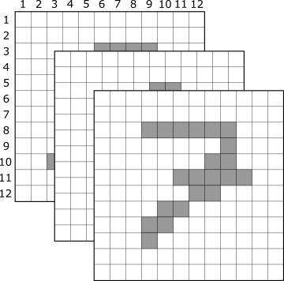
Die drei gestapelten \(12 \times 12\) Matrizen entsprechen drei (ziemlich verpixelten) Bilder von handgeschriebenen Zahlen. Wie der Output der dim() Funktion zeigt, haben die Bilder im MNIST Datensatz eine Grösse von \(28 \times 28\) Pixel. Ich habe im obigen Beispiel der Einfachheit halber nur \(12 \times 12\) Pixel Bilder visualisiert.
Schauen Sie sich nun den Output der dim() Funktion nochmals genau an. Wie viele Bilder enthält der Trainingsdatensatz?
Wie viele Pixel hat jedes Bild?
Der Trainingsdatensatz enthält 60’000 Bilder. Das zeigt uns die erste Zahl im Output der dim() Funktion.
Die MNIST Bilder haben eine Grösse von \(28 \times 28\) Pixel. Deshalb hat jedes Pixel insgesamt 784 Pixels.
Mithilfe der eckigen Klammern (z.B. x_train[]) können wir indexen, d.h. wir können gewisse Elemente aus dem 3-D Array extrahieren und anschauen. Schauen wir uns doch mal die Dimensionen des ersten Bilds im Trainingsdatensatz an:
# Dimensionen des ersten Bilds im Trainingsdatensatz
dim(x_train[1, , ])[1] 28 28Wie erwartet handelt es sich um eine \(28 \times 28\) Matrix, also um eine Matrix mit 28 Zeilen und 28 Spalten. Jedes Element der Matrix repräsentiert ein Pixel im Bild. Das Element in der ersten Zeile der ersten Spalte ist das Pixel im linken oberen Ecken des Bilds. Wichtig: es handelt sich hier um sogenannte Grayscale Bilder. Das bedeutet, dass jeder Pixelwert jeweils die Dunkelheit des jeweiligen Pixels angibt.
Pixels mit dem Wert 0 sind schwarz und Pixels mit dem Wert 255 sind weiss. Alle Abstufungen dazwischen sind Graustufen. Das bedeutet, dass wir oben die Bilder der Zahlen eigentlich falsch dargestellt haben, nämlich als schwarze/graue Zahlen auf weissem Hintergrund. Die Zahlen im MNIST Datensatz sind jedoch in heller Farbe auf dunklem Hintergrund gespeichert. Wir werden das weiter unten sehen, wenn wir ein Bild als Heatmap darstellen.
Mit der Funktion prmatrix() können wir uns die Matrix (oder zumindest einen Teil davon, denn ich indexe die Zeilen 5-26 und die Spalten 5-21) mal anzeigen lassen. Sehen Sie um welche Zahl es sich handelt?
# Matrix des ersten Trainingsbild anzeigen lassen
prmatrix(x_train[1, 5:26, 5:21], rowlab = rep("", 28), collab = rep("", 28))
0 0 0 0 0 0 0 0 0 0 0 0 0 0 0 0 0
0 0 0 0 0 0 0 0 3 18 18 18 126 136 175 26 166
0 0 0 0 30 36 94 154 170 253 253 253 253 253 225 172 253
0 0 0 49 238 253 253 253 253 253 253 253 253 251 93 82 82
0 0 0 18 219 253 253 253 253 253 198 182 247 241 0 0 0
0 0 0 0 80 156 107 253 253 205 11 0 43 154 0 0 0
0 0 0 0 0 14 1 154 253 90 0 0 0 0 0 0 0
0 0 0 0 0 0 0 139 253 190 2 0 0 0 0 0 0
0 0 0 0 0 0 0 11 190 253 70 0 0 0 0 0 0
0 0 0 0 0 0 0 0 35 241 225 160 108 1 0 0 0
0 0 0 0 0 0 0 0 0 81 240 253 253 119 25 0 0
0 0 0 0 0 0 0 0 0 0 45 186 253 253 150 27 0
0 0 0 0 0 0 0 0 0 0 0 16 93 252 253 187 0
0 0 0 0 0 0 0 0 0 0 0 0 0 249 253 249 64
0 0 0 0 0 0 0 0 0 0 46 130 183 253 253 207 2
0 0 0 0 0 0 0 0 39 148 229 253 253 253 250 182 0
0 0 0 0 0 0 24 114 221 253 253 253 253 201 78 0 0
0 0 0 0 23 66 213 253 253 253 253 198 81 2 0 0 0
0 0 18 171 219 253 253 253 253 195 80 9 0 0 0 0 0
55 172 226 253 253 253 253 244 133 11 0 0 0 0 0 0 0
136 253 253 253 212 135 132 16 0 0 0 0 0 0 0 0 0
0 0 0 0 0 0 0 0 0 0 0 0 0 0 0 0 0Wir können die Matrix auch als Heatmap anzeigen lassen. Dazu müssen wir aber zuerst die Graustufen definieren:
# Definiere Grauabstufungen
grays <- rgb(red = (0:255)/255, blue = (0:255)/255, green = (0:255)/255)
# Visualisiere erstes Bild
heatmap(x_train[1, , ], Rowv = NA, Colv = NA, revC = T, col = grays, scale = "none")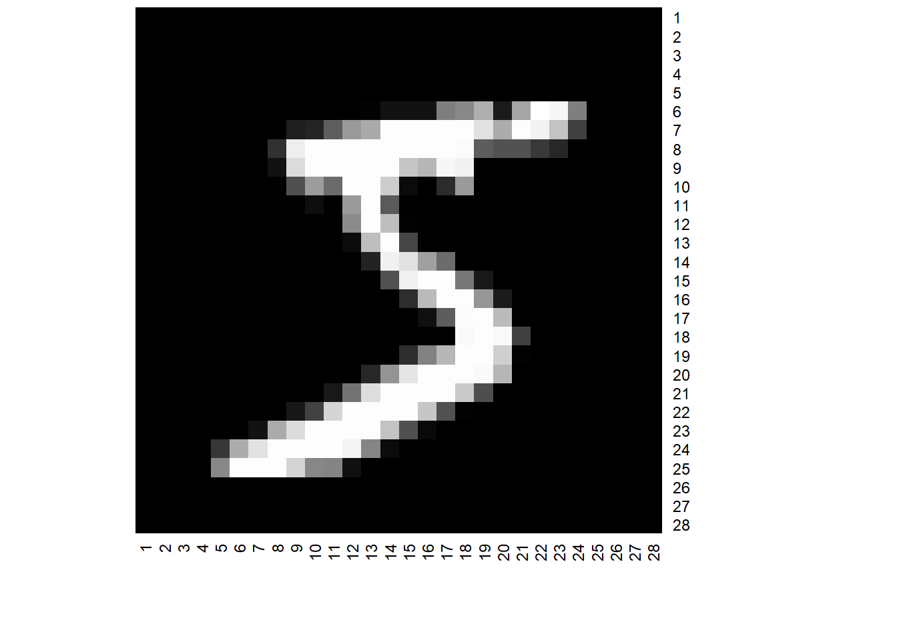
Wir haben gesehen, dass die Input-Daten als 3-D Array gespeichert sind. Um die Input-Daten in Modellen zu verwenden, wollen wir sie in ein zweidimensionales Datenformat bringen (eine Matrix oder einen Data Frame), in dem eine Zeile ein Bild ist und die Spalten die Pixelwerte bezeichnen. Wir transformieren also die Bildmatrix in lange Vektoren. Jedes Bild wird so in einen Zeilenvektor der Länge \(28 \cdot 28 = 784\) transformiert. Folgende Abbildung zeigt das Vorgehen schematisch für ein Bild:
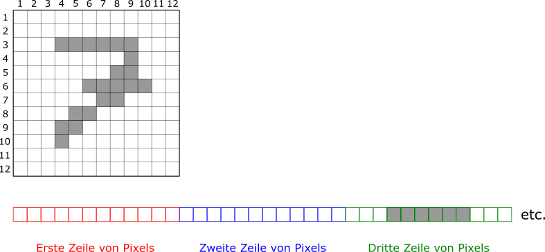
In R kann man diesen Schritt sehr einfach bewerkstelligen, indem man die Dimensionen der beiden Arrays (x_train und x_test) von Hand ändert zu c(60000, 784) (für den Trainingsdatensatz).
# Transformieren 3-D Array zu 2-D Matrix
dim(x_train) <- c(60000, 28 * 28)
dim(x_test) <- c(10000, 28 * 28)
# Überprüfe Dimensionen in Trainingsdatensatz
dim(x_train)[1] 60000 784Ganz am Schluss skalieren wir die Input-Daten, indem wir jeden Wert durch 255 dividieren. Warum 255? Das ist die maximale Anzahl Farbabstufungen. Wenn ein Pixel den Wert 255 hat, dann ist es ein weisses Pixel. Durch die Skalierung hat jedes Pixel einen Wert zwischen 0 und 1. Durch die Skalierung der Input-Daten können wir oft die Trainingsperformance verbessern (inbesondere verkürzen wir so das Training).
# Scaling
x_train <- x_train / 255
x_test <- x_test / 255In diesem Abschnitt schauen wir uns an, wie ein ANN aufgebaut ist. Da ANNs in der Regel sehr komplex sind, schreiben wir oft nicht eine mathematische Formel für das Modell auf, sondern wir stellen die Architektur eines ANNs grafisch dar. In diesem Abschnitt schauen wir uns der Einfachheit halber ein sehr simples ANN an, das lediglich zwei Input-Variablen hat, nämlich \(x_1\) und \(x_2\). Der Einfachheit halber lasse ich hier das \(i\) im Index der Input-Variablen immer weg.
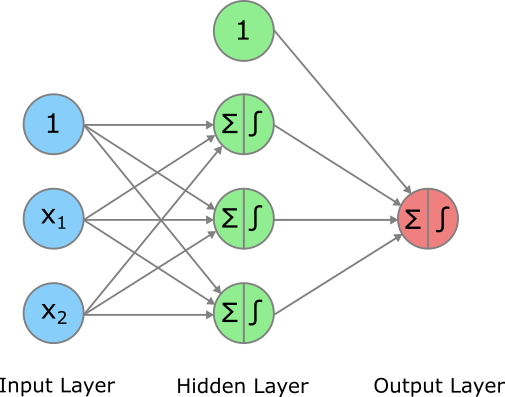
Das oben abgebildete ANN hat drei sogenannte Layers:
Später werden wir sehen, dass ein ANN mehr als einen Hidden Layer haben kann. Das ist vor allem dann nötig, wenn wir es mit sehr komplexen Problemen zu tun haben. Wenn wir mehrere Hidden Layers haben, sprechen wir von tiefen ANNs. Das ist übrigens der Ursprung des Ausdrucks Deep Learning.
Jeder Knoten (engl. Node) in obiger Grafik ist ein sogenanntes Neuron (Sie sehen an diesem Begriff eine der Analogien zu biologischen Gehirnen). Wir werden bald sehen, dass in jedem Neuron des ANNs einfache mathematische Operationen ausgeführt werden. Die Fähigkeit, komplexe Probleme zu lösen kommt erst aus dem Zusammenspiel bzw. der Kombination dieser vielen simplen Komponenten. Wir gehen nun auf die einzelnen Elemente dieser Architektur genauer ein.
In einem zweiten Schritt übergeben wir die gewichteten Summen, die wir in den Neurons des Hidden Layers berechnet haben, einer Aktivierungsfunktion. Wir nennen diese Funktion einfach mal allgemein \(g\) (das S-förmige Symbol in den Neurons in obiger Abbildung stellt die Aktivierung symbolisch dar). Wir können die gewichtete Summe des ersten Neurons wie folgt in die Aktivierungsfunktion einsetzen:
\[ g\left(z_1^{(1)}\right) = g(w_{10}^{(1)} + w_{11}^{(1)}\cdot x_1 + w_{12}^{(1)}\cdot x_2) \]
Doch warum braucht es eine Aktivierungsfunktion überhaupt und was macht sie genau? Eine Aktivierungsfunktion kann ein Neuron aktivieren, wie es der Name ja bereits andeutet. Ob ein Neuron aktiviert wird oder nicht, hängt von der gewichteten Summe ab. Ist die gewichtete Summe gross, so wird das Neuron aktiviert und es wird ein Signal an den nächsten Layer weitergeleitet. Wenn die gewichtete Summe klein ist, dann wird kein Signal oder nur ein schwaches Signal an den nächsten Layer weitergeleitet.
Welche Form nimmt diese Aktivierungsfunktion \(g\) an? Historisch wurde vor allem die Sigmoid Aktivierungsfunktion verwendet. Wir kennen diese Funktion bereits von der logistischen Regression. Zur Erinnerung:
\[ g(z) = \frac{e^z}{1+e^z}=\frac{1}{1+e^{-z}} \] Für jeden reellen Wert \(z\) gibt uns die Funktion \(g(z)\) einen Wert zwischen 0 und 1 zurück.
Die Sigmoid Funktion ist allerdings bei weitem nicht die einzige Aktivierungsfunktion. Heute wird für die Aktivierung der Neurons in den Hidden Layers for allem die ReLU Funktion verwendet. ReLU steht für Rectified Linear Unit und die Funktion ist wie folgt definiert:
\[ g(z) = \begin{cases} 0\, ,& z < 0 \\ z ,& z\geq 0 \end{cases} \]
Die Funktion ist eigentlich ganz simpel. Solange die gewichtete Summe negativ ist, nimmt die Funktion den Wert 0 an. Erst wenn die gewichtete Summe im positiven Bereich liegt, nimmt die Funktion andere Werte an. Sie steigt nämlich von 0 an linear mit einer Steigung von 1. Grafisch sieht das folgendermassen aus:
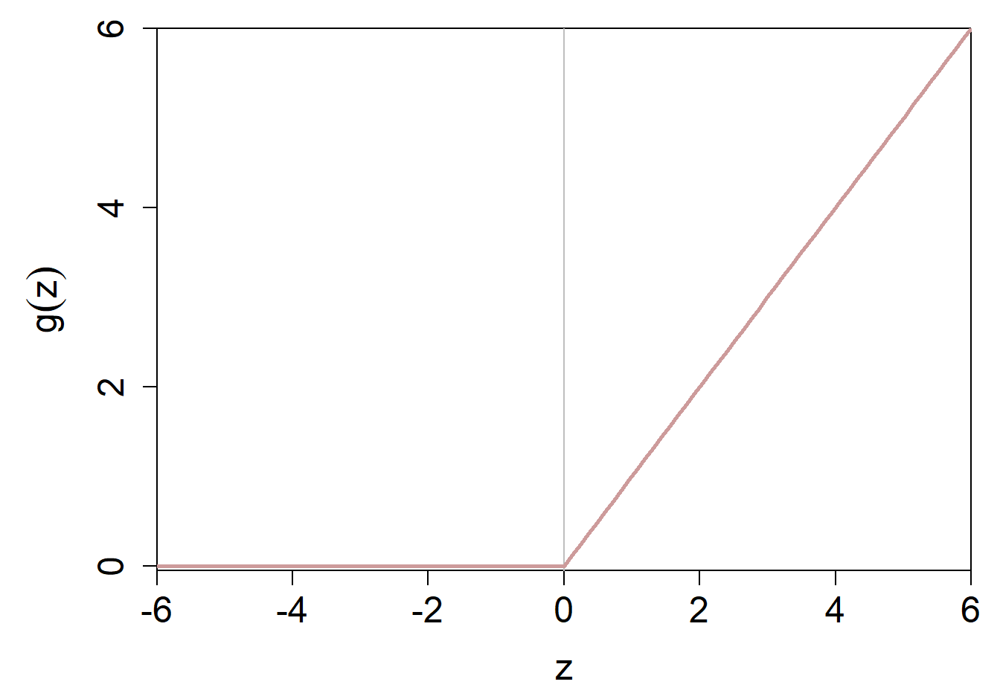
R umsetzen, d.h. wie würden Sie relu <- function(z){"IHR CODE"} ergänzen?R einfach umsetzen: relu <- function(z){ifelse(z < 0, 0, z)}.Wir haben nun zwei verschiedene Aktivierungsfunktionen kennen gelernt, die Sigmoid Funktion und die ReLU Funktion. Das wichtigste Merkmal einer Aktivierungsfunktion ist, dass es eine nicht-lineare Funktion ist (auch ReLU ist ingesamt nicht-linear, denn es ist eine Kombination aus zwei verschiedenen linearen Komponenten). Warum ist das wichtig? Weil sonst nur lineare Modelle gelernt werden können. Eine nicht-lineare Aktivierungsfunktion erlaubt dem ANN, komplexe Muster zu lernen. Wir werden das später noch anhand eines Beispiels anschauen.
Wir können uns noch kurz eine andere Interpretation dieser Aktivierungen im Hidden Layer anschauen. Was passiert ist folgendes: wir generieren eine Transformation der Input Variablen \(x_1\) und \(x_2\) mithilfe der Gewichte sowie der Aktivierungsfunktion. Die Transformation ist dann in einem gewissen Sinn eine neue Variable (ein neues Feature). Das ist gemeint mit dem in der Einleitung erwähnten automatischen Feature Engineering Prozess. Weil jedes Neuron im Hidden Layer andere Gewichte hat, ist jede Transformation unterschiedlich, d.h. jedes Neuron generiert ein anderes neues Feature.
Um ein besseres Verständnis zu erhalten, wie ein Neuron im Hidden Layer Feature Engineering betreibt, können wir uns kurz überlegen, wie mithilfe der Aktivierung und sinnvoll gewählten Gewichten die AND-Logik umgesetzt werden kann.
Dabei nehmen wir an, dass die beiden Input-Variablen \(x_1\) und \(x_2\) binärer Natur sind, also nur die Werte \(\{0,1\}\) annehmen können.
Wie oben beschrieben, kann die Berechnung in einem Neuron im Hidden Layer wie folgt beschrieben werden:
\[ g(w_{10}^{(1)} + w_{11}^{(1)}\cdot x_1 + w_{12}^{(1)}\cdot x_2) \]
Nun nehmen wir an, dass die Gewichte folgende Werte haben:
Ausserdem sei \(g\) die ReLU Funktion.
Nun können wir uns anschauen, was passiert, wenn beide Input-Variablen den Wert 1 annehmen:
\[ g(w_{10}^{(1)} + w_{11}^{(1)}\cdot x_1 + w_{12}^{(1)}\cdot x_2) = g(-1.5 + 1 \cdot 1 + 1 \cdot 1) = 0.5 \] Und was passiert, wenn nur eine der Input-Variablen (z.B. \(x_1\)) den Wert 1 annimmt?
\[ g(w_{10}^{(1)} + w_{11}^{(1)}\cdot x_1 + w_{12}^{(1)}\cdot x_2) = g(-1.5 + 1 \cdot 1 + 1 \cdot 0) = 0 \] Wir sehen also, dass dieses Neuron nur dann aktiviert wird (also einen Output grösser als 0 zurückgibt), wenn beide Input-Variablen “aktiv” (also 1) sind.
Nun ist es erstmal Zeit für eine kurze Zusammenfassung. Wir haben ein ANN mit drei Layers angeschaut. Das ANN hat einen Input Layer, einen Hidden Layer und einen Output Layer. Wir haben gesehen, dass der Input Layer die Werte der Variablen \(x_1\) und \(x_2\) sowie eine 1 an jedes Neuron im Hidden Layer übergibt. Diese rechnen dann eine gewichtete Summe, welche wiederum der Aktivierungsfunktion (Sigmoid oder ReLU) übergeben wird. So produziert jedes Neuron im Hidden Layer einen Output, die Aktivierung. Doch was passiert damit?
Die Aktivierungen der drei Neurons im Hidden Layer, also \(g\left(z_1^{(1)}\right)\), \(g\left(z_2^{(1)}\right)\) und \(g\left(z_3^{(1)}\right)\), werden an den Output Layer übergeben. Ausserdem fügen wir erneut einen Bias Term (d.h. ein Neuron mit dem Wert 1) zum Hidden Layer hinzu. Grafisch sieht dieser Sachverhalt wie folgt aus:
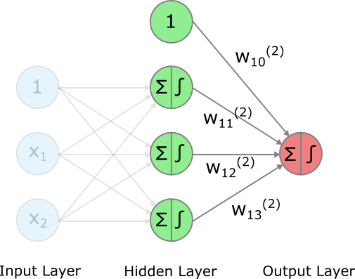
Wir können die Aktivierungen und die 1 in einem Vektor zusammenfassen:
\[ \mathbf{a}^{(1)} = \begin{pmatrix} 1 \\ g\left(z_1^{(1)}\right) \\ g\left(z_2^{(1)}\right) \\ g\left(z_3^{(1)}\right) \end{pmatrix} \]
Und nun können wir wie vorhin mit den Gewichten des Output Layers eine gewichtete Summe errechnen:
\[ \begin{aligned} z_1^{(2)} &= \left(\mathbf{w}_1^{(2)}\right)' \mathbf{a}^{(1)}\\ &= w_{10}^{(2)}\cdot 1 + w_{11}^{(2)}\cdot g\left(z_1^{(1)}\right) + w_{12}^{(2)}\cdot g\left(z_2^{(1)}\right) + w_{13}^{(2)}\cdot g\left(z_3^{(1)}\right)\\ &= w_{10}^{(2)} + w_{11}^{(2)}\cdot g\left(z_1^{(1)}\right) + w_{12}^{(2)}\cdot g\left(z_2^{(1)}\right) + w_{13}^{(2)}\cdot g\left(z_3^{(1)}\right) \end{aligned} \]
Ob diese gewichtete Summe nochmals einer Aktivierungsfunktion übergeben wird, hängt vom Problem ab:
Der Output unseres ANNs ist sowohl für das Regressionsproblem als auch für das Klassifikationsproblem eine komplexe Funktion unserer Input-Variablen \(x_1\) und \(x_2\). Diese Funktion hängt von den Gewichten im Modell ab sowie von den verwendeten Aktivierungsfunktionen. Lassen Sie uns diese Funktion für dieses einfache Beispiel aufschreiben:
\[ \begin{align} \hat{y} &= g\Big( w_{10}^{(2)} \\ &\quad + w_{11}^{(2)} \, \cdot g\big( w_{10}^{(1)} + w_{11}^{(1)} x_1 + w_{12}^{(1)} x_2 \big) \\ &\quad + w_{12}^{(2)} \, \cdot g\big( w_{20}^{(1)} + w_{21}^{(1)} x_1 + w_{22}^{(1)} x_2 \big) \\ &\quad + w_{13}^{(2)} \, \cdot g\big( w_{30}^{(1)} + w_{31}^{(1)} x_1 + w_{32}^{(1)} x_2 \big) \Big) \end{align} \]
Wir haben in diesem Abschnitt ein sehr einfaches ANN betrachtet, das einen Input Layer, einen Hidden Layer und einen Output Layer hat. Von nun an werden wir uns etwas komplexere ANNs anschauen, diese werden jedoch immer einen Input Layer und einen Output Layer haben. Was aber variieren kann, sind die Anzahl Hidden Layers. Je mehr Hidden Layers wir haben, desto tiefer (“deep”) ist unser Modell. Für komplexe Probleme (z.B. Bilderkennung) braucht es sehr tiefe ANN mit vielen Hidden Layers. Es ist also im Ermessen von Ihnen als Data Scientist:in, wie viele Hidden Layers Sie ins Modell aufnehmen. Ausserdem müssen Sie für jeden Hidden Layer bestimmen, wie viele Neurons der Layer enthalten soll. Und das sind nur mal zwei Hyperparameter des Modells, es gibt noch viele weitere.
Wir haben nun bereits viel über ANNs und deren Architektur gelernt. Bisher haben wir aber immer angenommen, dass alle Gewichte (Parameter) eines ANNs gegeben sind. Wie bei allen anderen parametrischen Modellen müssen die optimalen Gewichte in der Praxis aber mithilfe eines Trainingsdatensatzes gelernt werden (Model Fitting).
Bevor wir in das Modelltraining einsteigen, führen wir noch ein kleines bisschen neue Notation ein. Die Modellvorhersagen bezeichnen wir nun ab hier jeweils mit \(\hat{y}_i\). Im Fall von Regressionsproblemen handelt es sich bei \(\hat{y}_i\) um irgendeinen numerischen Wert (z.B. den vorhergesagten Hauspreis für Beobachtung \(i\)). Im Fall von Klassifikationsproblemen handelt es sich bei \(\hat{y}_i\) hingegen um eine Wahrscheinlichkeit. Wir bezeichnen den wahren Wert der Outputvariable wie bisher als \(y_i\) (also ohne Zirkumflex).
Um die bestmöglichen Parameter für unser ANN zu finden, lösen wir (wie bereits für klassiche ML Modelle gesehen) ein Optimierungsproblem und zwar wollen wir eine Kostenfunktion minimieren.
Wir haben die zwei zentralen Kostenfunktionen bereits kennen gelernt. Für den Regressionsfall wird auch im Deep Learning in den meisten Fällen der Mean Squared Error als Kostenfunktion verwendet (Kapitel 2). Für unsere leicht angepasste Notation lässt sich die Kostenfunktion wie folgt schreiben:
\[ J(\mathbf{w}) = \frac{1}{2n} \sum_{i=1}^{n} (y_i - \hat{y}_i)^2 \] Unsere Kostenfunktion \(J(\mathbf{w})\) ist eine Funktion aller Gewichte im ANN, die wir hier der Einfachheit halber als \(\mathbf{w}\) bezeichnen (also ein Vektor, der alle Gewichte des ANNs enthält). Nun wundern Sie sich vielleicht, denn man sieht ja auf der rechten Seite der Gleichung gar keine Gewichte. Die sind nämlich versteckt in den vorhergesagten Werten \(\hat{y}_i\). Wir wissen von oben, dass diese Outputs des Modells von den Werten der Input-Variablen \(x_{i1}\), \(x_{i2}\), etc. abhängen, aber eben auch von allen Gewichten im ANN.
Auch die meistverwendete Kostenfunktion für das binäre Klassifikationsbeispiel kennen Sie bereits. Es ist nämlich die log-loss Funktion, die wir auch bei der logistischen Regression verwenden (Kapitel 3). Zur Erinnerung (und mit leicht angpasster Notation):
\[ J(\mathbf{w}) = -\frac{1}{n} \sum_{i=1}^{n} [y_i \cdot \mbox{log}(\hat{y}_i) + (1 - y_i) \cdot \mbox{log}(1 - \hat{y}_i)] \] Wie beim Regressionsproblem sind die Gewichte des Modells in obiger log-loss Funktion in den Modell-Outputs \(\hat{y}_i\) versteckt (oder verschachtelt).
Wir möchten nun Werte für die Gewichte finden, so dass die Kostenfunktion möglichst klein wird. Doch wie finden wir diese optimalen Gewichte? Dazu werden wir einen Lernalgorithmus verwenden, mit dem wir uns iterativ den optimalen Gewichten annähern. Der typischerweise verwendete Algorithmus ist enorm populär und erstaunlich simpel und heisst Gradient Descent.
Um den Gradient Descent Algorithmus zu verstehen, wenden wir ihn jetzt aber erst mal für ein einfaches Problem an. Anstelle der Kostenfunktion wollen wir die Funktion \(f(x) = x^2\) minimieren. Oder anders gesagt, wir suchen den optimalen Wert \(x^*\), so dass \(f(x^*)\) minimal ist. Die Funktion sieht grafisch wie folgt aus:
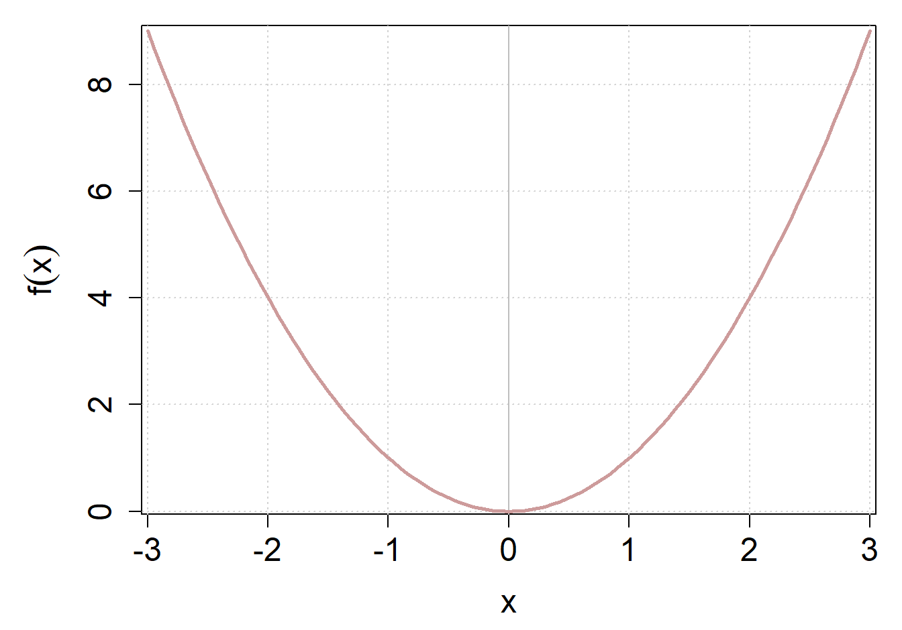
Sie sehen an obiger Abbildung sofort, wo das Minimum der Funktion liegt, nämlich bei \(x^* = 0\). Doch wie würden wir dieses Minimum analytisch finden?
Wir würden in einem ersten Schritt die erste Ableitung dieser Funktion nach \(x\) rechnen. Die erste Ableitung ist \(f'(x) = 2x\).
Danach setzen wir die Ableitung gleich null und lösen nach \(x\) auf:
\[ \begin{align} 2x &= 0 \\ x^* &= 0 \end{align} \]
Wir haben gerade gesehen, dass sich das Minimum für die Funktion \(f(x) = x^2\) analytisch finden lässt. Hier schauen wir uns nun aber anhand dieses Beispiels die grundlegenden Schritte des Gradient Descent Algorithmus an:
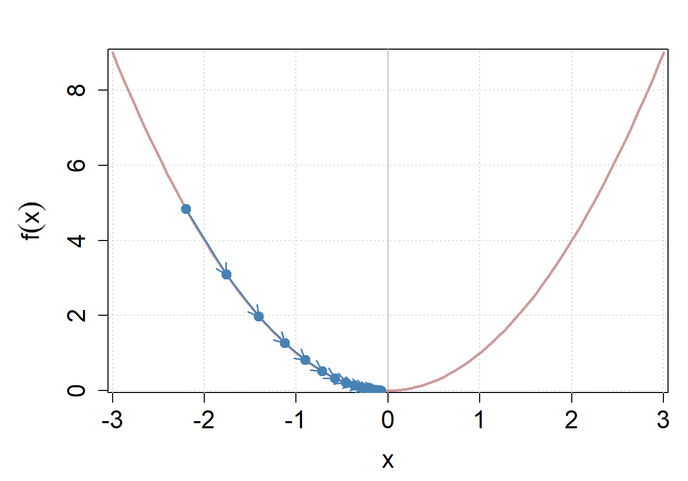
Die Lernrate ist enorm wichtig im Gradient Descent Algorithmus: wenn Sie einen zu kleinen Wert für \(\alpha\) setzen, dann konvergiert der Algorithmus nur langsam zum Minimum. Wenn Sie hingegen einen zu grossen Wert für \(\alpha\) festlegen, dann kann es vorkommen, dass der Algorithmus wortwörtlich über das Ziel hinausschiesst und sich dem Minimum annähert, indem er hin- und herspringt. In unserem Beispiel ist das nicht so schlimm, da der Algorithmus immer das Minimum findet (Ausnahme: \(\alpha=1.0\)).
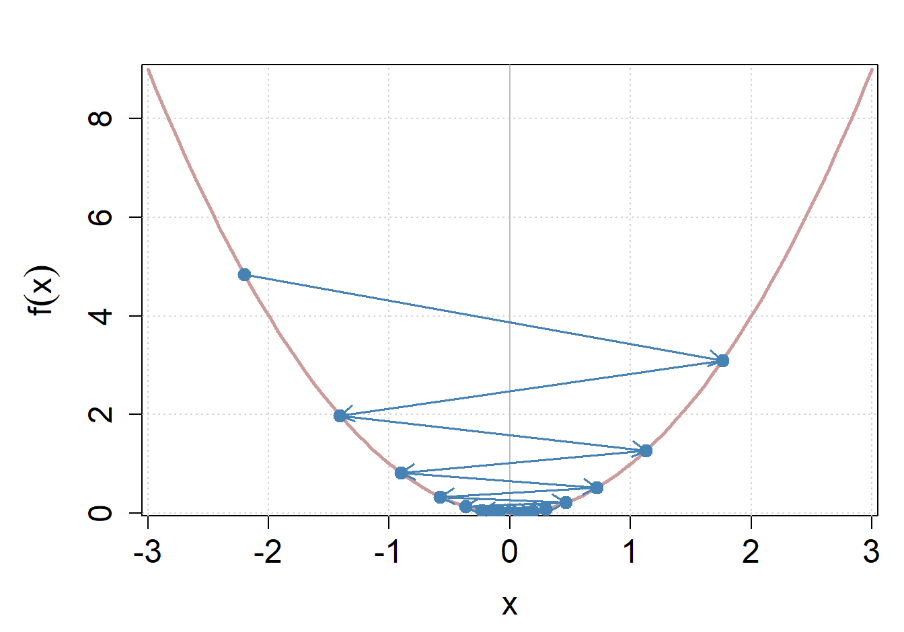
Wenn Sie dann allerdings später Kostenfunktionen minimieren wollen, dann kann es vorkommen, dass der Gradient Descent das Optimum nie findet, wenn Sie einen zu grossen Wert für die Lernrate festgelegt haben. Wir wollen also grundsätzlich langsam lernen.
Im obigen Beispiel ist die zu optimierende Funktion sehr regulär (man spricht hier auch von konvexen Funktionen) und dementsprechend findet der Gradient Descent Algorithmus das Minimum sehr schnell und noch fast wichtiger: es gibt nur ein globales Minimum (und keine lokalen Minima). In untenstehender Abbildung sehen Sie eine (nicht-konvexe) Kostenfunktion mit einem lokalen und einem globalen Minimum. Je nach Initialisierung findet der Algorithmus das lokale oder das globale Minimum, wobei ersteres suboptimal ist. Wenn wir rechts starten, dann besteht die Gefahr, dass wir zu früh stoppen und dadurch das globale Minimum gar nicht erst finden.
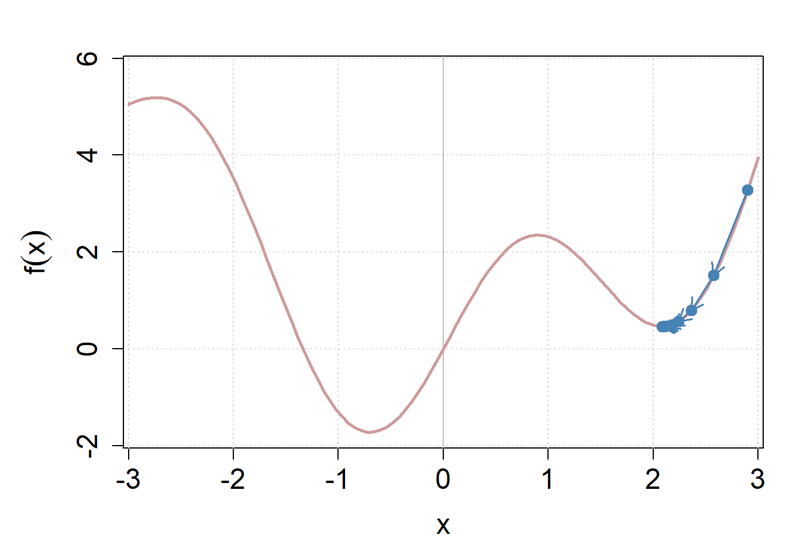
Der Backpropagation Algorithmus ist der Aspekt des Deep Learnings, den viele als den komplexesten Teil beurteilen. Aber eigentlich ist die Mathematik, die hier verwendet wird, nicht schwierig (zumindest dann, wenn wir uns ein einfaches Modell anschauen). Wir werden uns anhand des einfachen ANNs aus dem vorherigen Abschnitt kurz überlegen, was der Backpropagation Algorithmus macht. Wenn Sie den Gradient Descent Algorithmus verstanden haben, dann ist das schon die halbe Miete.
Wir haben in einem ersten Schritt die Kostenfunktionen für das Regressions- und das Klassifikationsproblem aufgeschrieben. Wir wollen alle Gewichte des ANNs (geschrieben als \(\mathbf{w}\)) so setzen, dass die Kostenfunktionen so klein wie möglich wird.
Im vorherigen Abschnitt haben wir anhand eines einfachen Beispiels (\(f(x)=x^2\)) gesehen, dass wir das Minimum einer Funktion mit dem Gradient Descent Algorithmus finden können. Die Hauptzutat dazu war die erste Ableitung der Funktion nach deren Argument \(x\).
Der komplizierteste Teil ist nun, dass die (partiellen) Ableitungen der Kostenfunktion nach den Gewichten nicht ganz so einfach zu rechnen sind wie im Fall der einfachen Funktion \(f(x)=x^2\). Erstens müssen wir für jedes Gewicht eine separate partielle Ableitung rechnen und zweitens sind die partiellen Ableitungen selber nicht ganz so einfach, weil die Modellarchitektur von ANNs ziemlich verschachtelt ist.
Schauen wir uns doch die Kostenfunktion für das Regressionsproblem mal etwas genauer an:
\[ \begin{aligned} J(\mathbf{w}) &= \frac{1}{2n} \sum_{i=1}^{n} (y_i - \hat{y}_i)^2\\ &= \frac{1}{2n} \sum_{i=1}^{n} \left(y_i - \left(w_{10}^{(2)} + w_{11}^{(2)}\cdot g\left(z_{i1}^{(1)}\right) + w_{12}^{(2)}\cdot g\left(z_{i2}^{(1)}\right) + w_{13}^{(2)}\cdot g\left(z_{i3}^{(1)}\right)\right)\right)^2 \end{aligned} \] In obiger Formel haben wir für \(\hat{y}_i\) die effektive Berechnung des Output Neurons eingesetzt. Nun haben wir die Gewichte des zweiten Layers bereits explizit in der Kostenfunktion drin. Wir wollen nun eine Ableitung nach einem dieser Gewichte rechnen, aber bevor wir das tun können, müssen wir noch zwei wichtige Ableitungsregeln repetieren.
Die Summenregel besagt, dass die Ableitung einer Summe von Funktionen gleich die Summe der Ableitungen ist. Oder mathematisch ausgedrückt:
\[ \left(\sum_{i=1}^{n} f_i(x)\right)'=\sum_{i=1}^{n}f'(x) \]
Die Kettenregel definiert, wie verschachtelte Funktionen abgeleitet werden. Wir bilden zuerst die äussere Ableitung und multiplizieren diese mit der inneren Ableitung. Ein Beispiel: die Ableitung der Funktion \(f(x)=(x^3 + 1)^2\) (nach \(x\)) lautet \(f'(x) = 2(x^3 + 1) \cdot 3x^2 = 6x^2(x^3 + 1)\). Der erste Teil \(2(x^3 + 1)\) ist die äussere Ableitung und der zweite Teil \(3x^2\) ist die innere Ableitung. Die beiden Ableitungen werden multipliziert.
Was ist die Ableitung der Funktion \(f(x)=(2x+5)^3\)?
Die korrekte Lösung ist \(3(2x+5)^2 \cdot 2 = 6(2x+5)^2\).
Nun sind wir bereit, die Ableitung der Kostenfunktion nach dem Gewicht \(w_{11}^{(2)}\) anzuschauen. Die Ableitung sieht folgendermassen aus:
\[ \begin{align} \frac{\partial J(\mathbf{w})}{\partial w_{11}^{(2)}} &= \frac{1}{2n}\sum_{i=1}^{n}2(y_i - \hat{y}_i) \cdot \left(-g\left(z_{i1}^{(1)}\right)\right)\\ &= -\frac{1}{n}\sum_{i=1}^{n} (y_i - \hat{y}_i) \cdot g\left(z_{i1}^{(1)}\right) \end{align} \]
Wir sehen, dass die partielle Ableitung der Kostenfunktion nach \(w_{11}^{(2)}\) einer Summe von Ableitungen entspricht (Summenregel). Jeder Teil der Summe ist eine Multiplikation der äusseren Ableitung, \(2(y_i - \hat{y}_i)\), und der inneren Ableitung, \(-g\left(z_{i1}^{(1)}\right)\) (Kettenregel).
Um die partielle Ableitung nach dem Gewicht \(w_{11}^{(2)}\) zu berechnen, benötigen wir für jede Beobachtung \(i\) den aktuellen Modelloutput \(\hat{y}_i\) sowie die Aktivierung des ersten Neurons aus dem Hidden Layer \(g\left(z_{i1}^{(1)}\right)\). Darum machen wir vor jedem Gradient Descent Schritt einen sogenannten Forward Pass, d.h. wir füttern unserem ANN alle Beobachtungen \(i\) und rechnen mit den aktuellen Gewichten die Aktivierungen sowie den Output und speichern diese für die Berechnung der Ableitungen. Mit obiger Formel und den gespeicherten Resultaten des Forward Pass können wir dann konkrete Werte für die Ableitungen rechnen und dann den Gradient Descent Schritt machen und die Gewichte anpassen, der sogenannte Backward Pass. Danach folgt der nächste Forward Pass mit den aktualisierten Gewichten, usw.
Die Ableitungen nach Gewichten aus dem ersten Layer sind etwas komplexer, darum lassen wir die erstmal weg. Aber vom Prinzip her würden sie gleich funktionieren. Wenn Ihr Kopf im Moment etwas brummt, dann ist das völlig normal. Wenn Sie sich eine Zeit lang mit dem Algorithmus befasst haben, werden Sie sehen, dass er eigentlich mathematisch gar nicht schwierig ist.
Wie sieht die Ableitung nach der Konstante \(w_{10}^{(2)}\) aus?
\[ \begin{align} \frac{\partial J(\mathbf{w})}{\partial w_{10}^{(2)}} &= \frac{1}{2n}\sum_{i=1}^{n}2(y_i - \hat{y}_i) \cdot \left(-1\right)\\ &= -\frac{1}{n}\sum_{i=1}^{n} (y_i - \hat{y}_i) \end{align} \]
Sie sehen oben, dass jede Ableitung eine Summe über den ganzen Datensatz beinhaltet. Wenn Ihre Trainingsdaten gross sind (z.B. \(n=10'000\)), dann kann die Berechnung dieser Ableitungen viel Zeit verschlingen. Darum wird in der Praxis eine angepasste Variante des Gradient Descents praktiziert, nämlich Mini-Batch Gradient Descent. Die Idee ist einfach: anstatt die Ableitung mit dem ganzen Datensatz zu rechnen, rechnen wir sie mit einem Mini-Batch, d.h. mit einer kleineren Anzahl zufällig gewählter Beobachtungen.
In jedem Schritt wird die Ableitung mit einem anderen Subset aus den Trainingsdaten (d.h. einem anderen Mini-Batch) gerechnet. Wenn ein Mini-Batch 128 Beobachtungen und der Trainingsdatensatz \(n=10'000\) Beobachtungen enthält, dann benötigen wir \(10'000/128 \approx 78\) Gradient Descent Schritte, um jede Beobachtung im Trainingsdatensatz einmal verwendet zu haben. Nach diesen 78 Schritten haben wir eine sogenannte Epoche des Trainings abgeschlossen.
Zusammenfassend können wir sagen, dass der Backpropagation Algorithmus uns erlaubt die Gewichte bzw. Parameter eines ANNs so zu verändern, dass die Kosten kleiner werden. Wir iterieren diesen Algorithmus so lange bis wir ein Minimum erreicht haben. Wir werden später sehen, dass wir die Berechnungen des Backpropagation Algorithmus zum Glück nicht selber machen müssen. Dazu gibt es wunderbare Software (z.B. TensorFlow oder PyTorch).
Wenn wir den Backpropagation Algorithmus uneingeschränkt anwenden, dann führt das unweigerlich zu Overfitting, denn ANNs sind enorm flexible Modelle und die Gewichte werden sich so lange anpassen bis das ANN die Trainingsdaten fast perfekt abbildet. Wir wollen dieses Overfitting aber unbedingt vermeiden! Dazu gibt es verschiedene Methoden.
Eine ganz einfache Art, das Overfitting zu vermeiden ist das sogenannte Early Stopping. Die Idee ist, dass wir den Backpropagation Algorithmus nur so lange laufen lassen bis der Loss auf einem separaten Validierungsdatensatz (Beobachtungen, die nicht für das Training verwendet werden) nicht mehr sinkt. Das ist eine sehr einfache, aber effektive Art Overfitting zu vermeiden.
Eine andere Form haben wir bereits kennen gelernt: Regularisierung. Wir fügen einen Ridge oder Lasso Regularisierungsterm zur Loss Funktion hinzu.
Eine dritte Form zur Vermeidung von Overfitting ist Dropout Learning. Die Idee ist, dass bei jedem Gradient Descent Schritt (für jede Beobachtung \(i\) separat) eine vorgegebene Anzahl zufällig ausgewählter Neurons im Hidden Layer nicht berücksichtigt werden. Dadurch vermeiden wir, dass sich die Neurons im Hidden Layer allzu stark spezialisieren und Noise in den Daten abbilden.
In diesem Abschnitt schauen wir uns an, wie wir ein einfaches Regressionsproblem mit einem ANN modellieren können. Es ist ein einfaches Regressionsproblem, weil wir nur eine Input Variable \(x\) haben. Der wahre Zusammenhang zwischen \(x\) und dem Output \(y\) ist allerdings nicht linear, sondern entspricht einer Sinus-Kurve, weshalb ein einfaches lineares Regressionsmodell der Form \(y=b_0 + b_1 \cdot x\) keine gute Lösung finden würde. Wir werden aber sehen, dass ein einfaches ANN mit drei Neurons im Hidden Layer (plus Bias) eine gute Lösung findet. Folgende Abbildung zeigt die Architektur des ANNs, das wir verwenden werden:
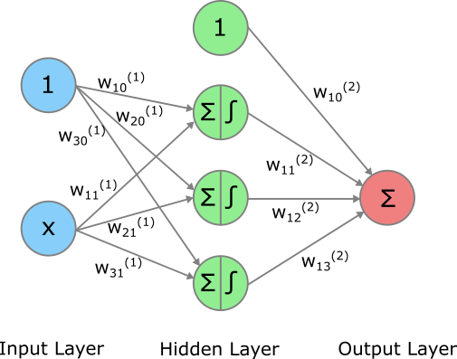
Warum findet das ANN keine gute Lösung, wenn alle Gewichte zu Beginn 0 betragen, also mit Nullen initialisiert sind? Das Problem ist, dass in diesem Fall die Neurons im Hidden Layer nicht unterscheidbar sind und sich auch nach vielen Backpropagation Iterationen nicht unterscheiden. Das ANN hat dann effektiv nur ein Neuron, auch wenn die Architektur ganz viele Neurons enthält. Es ist also äusserst wichtig, dass die Gewichte zufällig initialisiert werden. Z.B. kann man die ursprünglichen Gewichte aus einer Standardnormalverteilung mit Mittelwert 0 und Standardabweichung 1 ziehen.
In dem Foliensatz schauen wir uns nun den Backpropagation Algorithmus für das einfache Beispiel Schritt für Schritt an.
ANNs und Deep Learning im Allgemeinen sind insbesondere auch darum populär, weil es sehr klar ist, wie Modelle mit mehr als einer Output Variable (Zielvariable) gerechnet werden können. In diesem Zusammenhang spricht man von Multi-Output Modellen. Wir schauen uns zuerst Multi-Output Modelle für das Regressionsproblem und danach für das Klassifikationsproblem an.
Wenn wir ein Regressionsproblem mit mehreren Output Variablen (Zielvariablen) mit einem ANN rechnen wollen, dann können wir einfach für jede Output Variable ein separates Neuron im Output Layer hinzufügen. Hier ein Beispiel mit zwei Output Variablen.
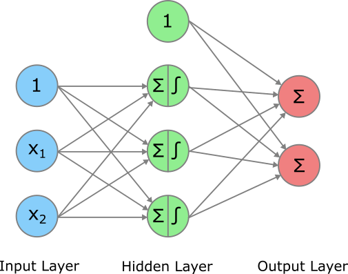
Wir sehen, dass beide Neurons im Output Layer mit den Aktivierungen sowie dem Bias aus dem Hidden Layer gefüttert werden. Weil wir uns hier das Regressionsproblem anschauen, wird in den Output Neurons lediglich eine gewichtete Summe gerechnet, die dann auch gleich der Output des Modells ist. Es gilt allerdings zu erwähnen, dass auch im Regressionsproblem eine Aktivierung möglich ist, z.B. dann wenn die Outputs nicht negativ sein dürfen. In dem Fall kann die ReLU Funktion verwendet werden.
Wir haben oben bereits gelernt, dass wir ein ANN mit einem Neuron im Output Layer verwenden können, wenn ein Klassifikationsproblem mit einer Output Variable vorliegt. In diesem Fall verwenden wir im Output Neuron die Sigmoid Aktivierungsfunktion, um die gewichtete Summe in eine Wahrscheinlichkeit zu überführen.
Selbstverständlich können wir auch für das Klassifikationsproblem ein Multi-Output Modell rechnen, das gleichzeitig mehrere Output Variablen vorhersagt.
Das häufigere Problem ist allerdings, dass wir ein Klassifkationsproblem lösen wollen, das mehr als zwei Klassen hat. Wenn es sich also nicht um ein binäres Klassifikationsproblem handelt. Z.B. wollen wir basierend auf einem Bild einer von Hand geschriebenen Zahl vorhersagen, ob es sich um eine 0, 1, 2, … oder 9 handelt (MNIST). Dabei sind die 10 möglichen Output Werte (die Zahlen zwischen 0 und 9) nicht voneinander unabhängig. In diesem Fall spricht man von einem Multi-Class Problem. Die Architektur eines solchen Multi-Class Problems mit drei möglichen Klassen ist in folgender Abbildung dargestellt:
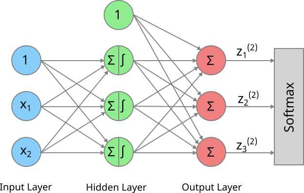
Es gibt eine zusätzliche Komponente im Vergleich zum ANN für das Regressionsproblem, das wir oben angeschaut haben, und zwar benötigen wir einen sogenannten Softmax Layer. Dieser stellt sicher, dass die gewichteten Summen aus dem Output Layer in Wahrscheinlichkeiten transformiert werden und zwar so, dass die Summe über alle Wahrscheinlichkeiten 1 ergibt.
Die gewichtete Summe für das erste Output Neuron bezeichnen wir wie oben als \(z_1^{(2)}\). Die Softmax Funktion für dieses erste Output Neuron sieht dann wie folgt aus:
\[ \begin{aligned} \sigma(z_1^{(2)}) &= \frac{e^{z_1^{(2)}}}{\sum_{j=1}^{K} e^{z_j^{(2)}}}\\ &= \frac{e^{z_1^{(2)}}}{e^{z_1^{(2)}} + e^{z_2^{(2)}} + e^{z_3^{(2)}}} \end{aligned} \]
Sie sehen, dass alle gewichteten Summen aus dem Output Layer exponiert werden, z.B. \(e^{z_1^{(2)}}\). Dadurch werden potenziell negative gewichtete Summen positiv gemacht. Durch das Exponieren wird die grösste gewichtete Summe zur dominanten Komponente. Das ist auch der Grund für den Namen Softmax: es handelt sich in einem gewissen Sinne um eine sanfte (softe) Annäherung an die Max-Funktion. Folgende Aufgabe hilft beim Verständnis:
Das keras Package enthält den MNIST Datensatz bereits und wir können ihn darum sehr einfach in R laden. Zuerst müssen wir allerdings die Systemvariable RETICULATE_PYTHON setzen, so dass R die korrekte Python Installation (nämlich diejenige im Conda Environment “tf”) findet. Danach laden wir die beiden wichtigen R Packages keras und tensorflow sowie das altbekannte tidyverse.
# Benötigen wir, um R zur korrekten Python Installation zu leiten.
# Muss zwingend als erster Befehl ausgeführt werden.
Sys.setenv(RETICULATE_PYTHON="C:/Users/martin.sterchi/AppData/Local/anaconda3/envs/tf/python.exe")
# Packages laden
library(tidyverse)
library(tensorflow)
library(keras)
# Clean-up Environment
rm(list = ls())
# Working Directory
setwd("...")Nun laden wir MNIST direkt aus dem keras Package mit der Funktion dataset_mnist(). Danach führen wir die Preprocessing Schritte durch, die wir bereits weiter oben besprochen haben.
# Lade MNIST Daten direkt aus Keras
mnist <- dataset_mnist()
# Entpacke die Daten aus Liste
X_train <- mnist$train$x
y_train <- mnist$train$y
X_test <- mnist$test$x
y_test <- mnist$test$y
# Transformiere Input-Daten zu 2-D Matrix
dim(X_train) <- c(60000, 28 * 28)
dim(X_test) <- c(10000, 28 * 28)
# Skaliere Input-Daten
X_train <- X_train / 255
X_test <- X_test / 255Unsere Zielvariable enthält ja bekanntlich die Zahlen 0 bis 9, es handelt sich also um ein Multi-Class Problem. Wir werden dem Deep Learning Modell die Zielvariable one-hot-encoded übergeben müssen. Das können wir bereits hier mit der Funktion to_categorical() vorbereiten.
# One-Hot-Encoding für Zielvariable
y_train <- to_categorical(y_train, 10)
y_test <- to_categorical(y_test, 10)
# Schauen wir uns an, wie der Output des One-Hot-Encodings ausschaut
head(y_train) [,1] [,2] [,3] [,4] [,5] [,6] [,7] [,8] [,9] [,10]
[1,] 0 0 0 0 0 1 0 0 0 0
[2,] 1 0 0 0 0 0 0 0 0 0
[3,] 0 0 0 0 1 0 0 0 0 0
[4,] 0 1 0 0 0 0 0 0 0 0
[5,] 0 0 0 0 0 0 0 0 0 1
[6,] 0 0 1 0 0 0 0 0 0 0Sie sehen, dass jede Zeile in obigem Output einer Beobachtung entspricht. Die erste Zeile entspricht einer 5 (Achtung: es sieht aus als wäre es eine 6, aber das Indexing beginnt leider in R immer bei 1, weshalb die erste Spalte den Nullen entspricht, die zweite Spalten den Einsen, usw.).
Nun initialisieren wir unser ANN Modell mit der Keras Funktion keras_model_sequential(). Danach fügen wir die Layers des ANN mithilfe des Pipe Operators %>% schrittweise hinzu.
Der erste Layer ist ein Hidden Layer: wir definieren, dass wir 100 Neurons wollen und für die Aktivierungsfunktion verwenden wir ReLU. Mit dem Argument input_shape = c(784) sagen wir dem Hidden Layer, dass der Input Layer 784 (+1) Neurons enthält.
Der zweite Layer ist ein weiterer Hidden Layer mit 50 Neurons und ebenfalls einer ReLU Aktivierungsfunktion.
Der letzte Layer ist der Output Layer, der zwingend 10 Neurons haben muss, da wir ja 10 mögliche Kategorien in der Zielvariable haben (die Zahlen 0 - 9). Die Aktivierungsfunktion im Output Layer ist Softmax, da die 10 Wahrscheinlichkeiten sich auf 1 summieren sollen.
# Wir initialisieren nun ein sequentielles Modell, in dem wir die Layers
# sequenziell hinzufügen werden.
ann1 <- keras_model_sequential()
# Hier werden die zwei Hidden Layers und der Output Layer hinzugefügt.
ann1 %>%
layer_dense(units = 100, activation = 'relu', input_shape = c(784)) %>%
layer_dense(units = 50, activation = 'relu') %>%
layer_dense(units = 10, activation = 'softmax')Mit dem summary() Befehl können wir uns die Architektur unseres Modells anschauen:
# Wir überprüfen die Architektur
summary(ann1)Model: "sequential_1"
________________________________________________________________________________
Layer (type) Output Shape Param #
================================================================================
dense_1 (Dense) (None, 100) 78500
dense_2 (Dense) (None, 50) 5050
dense_3 (Dense) (None, 10) 510
================================================================================
Total params: 84060 (328.36 KB)
Trainable params: 84060 (328.36 KB)
Non-trainable params: 0 (0.00 Byte)
________________________________________________________________________________Wir sehen, dass unser Modell zwischen dem Input Layer und dem ersten Hidden Layer insgesamt 78’500 Gewichte trainieren wird. Wie kommt man auf diese Zahl? Wir haben 784 Neurons im Input Layer und 100 Neurons im Hidden Layer und jedes Paar von Neurons in den beiden Layers ist durch ein Gewicht verknüpft. Das heisst, wir haben schon mal \(784 \cdot 100 = 78'400\) Gewichte. Die restlichen 100 Gewichte sind die Konstanten, dargestellt durch die Pfeile vom 1-Neuron im Input-Layer zu allen Neurons im Hidden Layer.
Aufgabe: Überlegen Sie sich, warum wir zwischen dem zweiten Hidden Layer und dem Output Layer 510 Gewichte trainieren werden.
Nun kommt der Schritt, in dem wir das Modell kompilieren. Konkret heisst das: wir definieren, wie es trainiert werden soll (das Training passiert hier aber noch nicht). Wir definieren die Kostenfunktion, hier wählen wir "categorical_crossentropy", eine Erweiterung des Log-Loss auf das Multi-Class Problem. Der Optimieralgorithmus heisst Adam und ist eine Erweiterung des Gradient Descents, den ihr bereits kennt. Als Gütemass wählen wir die Accuracy, da die Verteilung der 10 Zahlen schön balanced ist.
# Mit 'compile()' spezifizieren wir, wie das Modell gefittet werden soll.
ann1 %>%
compile(
loss = "categorical_crossentropy",
optimizer = "adam",
metrics = c("accuracy")
)Nun fitten (oder trainieren) wir unser erstes Deep Learning Modell! Dazu rufen wir die fit() Funktion auf und übergeben die Trainingsdaten sowie die Zielvariable (im one-hot-encoded Format). Mit epochs = 10 definieren wir, dass der ganze Trainingsdatensatz insgesamt 10 Mal durch das Netzwerk hindurchgeschleust wird, um die Gewichte zu optimieren. Dabei wird bei jedem Forward- und Backward-Pass über das Netzwerk nur ein sogenannter Mini-Batch von 32 Beobachtungen durch das Netzwerk geschickt. Mit validation_split = 0.1 definieren wir, dass 10% des Trainingsdatensatzes nicht verwendet werden, damit wir Beobachtungen haben, um den Grad des Overfittings abzuschätzen.
Aufgabe: Wie kommt man auf die 1688 Trainingsschritte pro Epoche?
Wichtig: Wir können auch in Deep Learning Modellen Gewichte (Achtung, hier sind nicht die Parameter des Modells gemeint) verwenden, um gewissen Beobachtungen während des Trainings mehr oder weniger Gewicht zu geben. Wie das funktionieren würde, findet ihr hier.
# Nun trainieren wir das Modell
history <- ann1 %>%
fit(X_train, y_train, epochs = 10, batch_size = 32, validation_split = 0.1)Epoch 1/10
1688/1688 [==================] - 7s 4ms/step - loss: 0.2809 - accuracy: 0.9174 - val_loss: 0.1299 - val_accuracy: 0.9608
Epoch 2/10
1688/1688 [==================] - 7s 4ms/step - loss: 0.1201 - accuracy: 0.9628 - val_loss: 0.1043 - val_accuracy: 0.9665
Epoch 3/10
1688/1688 [==================] - 7s 4ms/step - loss: 0.0852 - accuracy: 0.9731 - val_loss: 0.1063 - val_accuracy: 0.9678
Epoch 4/10
1688/1688 [==================] - 7s 4ms/step - loss: 0.0649 - accuracy: 0.9792 - val_loss: 0.0858 - val_accuracy: 0.9723
Epoch 5/10
1688/1688 [==================] - 8s 4ms/step - loss: 0.0498 - accuracy: 0.9838 - val_loss: 0.0791 - val_accuracy: 0.9765
Epoch 6/10
1688/1688 [==================] - 6s 4ms/step - loss: 0.0422 - accuracy: 0.9864 - val_loss: 0.0945 - val_accuracy: 0.9732
Epoch 7/10
1688/1688 [==================] - 5s 3ms/step - loss: 0.0337 - accuracy: 0.9896 - val_loss: 0.0865 - val_accuracy: 0.9765
Epoch 8/10
1688/1688 [==================] - 5s 3ms/step - loss: 0.0295 - accuracy: 0.9904 - val_loss: 0.0947 - val_accuracy: 0.9762
Epoch 9/10
1688/1688 [==================] - 5s 3ms/step - loss: 0.0233 - accuracy: 0.9921 - val_loss: 0.0845 - val_accuracy: 0.9787
Epoch 10/10
1688/1688 [==================] - 6s 3ms/step - loss: 0.0215 - accuracy: 0.9929 - val_loss: 0.0866 - val_accuracy: 0.9772Der Fortschritt des Modell Fitting Prozesses wird in der R Konsole (wie oben) dargestellt. Da wir den Modell Fitting Prozess auch im Objekt history gespeichert haben, können wir den Fortschritt plotten:
# Plots des Lernoutputs
plot(history, smooth = TRUE)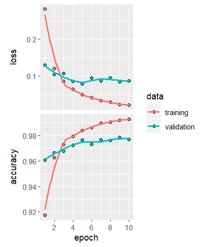
Wir sehen sowohl den Wert der Kostenfunktion als auch den Wert der Accuracy über die Trainingsepochen. Wichtig: wie beurteilen wir, ob ein Overfitting stattgefunden hat?
Das ist hier klar der Fall. Auf dem Validierungsdatensatz ist relativ bald keine klare Verbesserung mehr ersichtlich. Wir müssen also das Modell verbessern, damit es nicht mehr zu Overfitting kommt.
Optional: Warum beginnen die beiden Kurven jeweils an unterschiedlichen Stellen?
Der Loss und die Accuracy auf dem Validierungsdatensatz werden jeweils am Ende einer Epoche gemessen. Der Loss und die Accuracy auf dem Trainingsdatensatz werden hingegeben während der Epoche gemessen.
Wir werden hier zwei Techniken verwenden, um das Overfitting zu vermeiden: Dropout Learning und Early Stopping. Wir haben das Dropout Learning weiter oben bereits kennen gelernt. Sie sehen in unten stehendem Code, dass in den beiden Hidden Layers je 20% zufällig ausgewählte Neurons während des Trainings ignoriert werden. Falls das Overfitting sehr stark ist, dann könnte hier auch eine höhere Prozentzahl gewählt werden. Ansonsten ist das Modell dasselbe wie vorher.
# Wir initialisieren nun ein sequentielles Modell, in dem wir die Layers
# sequenziell hinzufügen werden.
ann2 <- keras_model_sequential()
# Hier werden die Hidden Layers, die Dropout Layers und der Output Layer hinzugefügt.
ann2 %>%
layer_dense(units = 100, activation = 'relu', input_shape = c(784)) %>%
layer_dropout(0.2) %>%
layer_dense(units = 50, activation = 'relu') %>%
layer_dropout(0.2) %>%
layer_dense(units = 10, activation = 'softmax')
# Mit 'compile()' spezifizieren wir, wie das Modell gefittet werden soll.
ann2 %>%
compile(
loss = "categorical_crossentropy",
optimizer = "adam",
metrics = c("accuracy")
)Optional: Analogie zu Dropout Learning aus HOML (p. 394)
“It is quite surprising at first that this rather brutal technique works at all. Would a company perform better if its employees were told to toss a coin every morning to decide whether or not to go to work? Well, who knows; perhaps it would! The company would obviously be forced to adapt its organization; it could not rely on any single person to fill in the coffee machine or perform any other critical tasks, so this expertise would have to be spread across several people. Employees would have to learn to cooperate with many of their coworkers, not just a handful of them. The company would become much more resilient. If one person quit, it wouldn’t make much of a difference. It’s unclear whether this idea would actually work for companies, but it certainly does for neural networks. Neurons trained with dropout cannot co-adapt with their neighboring neurons; they have to be as useful as possible on their own. They also cannot rely excessively on just a few input neurons; they must pay attention to each of their input neurons. They end up being less sensitive to slight changes in the inputs. In the end you get a more robust network that generalizes better.”
Nun bereiten wir die zweite Technik zur Vermeidung des Overfittings vor, nämlich Early Stopping. Die Technik wurde von Geoffrey Hinton (einem Übervater des Deep Learnings) erfunden und er hat die Technik einmal einen “beautiful free lunch” genannt. Die Technik des Early Stoppings ist nämlich erstaunlich einfach: wir stoppen das Training sobald der Loss bzw. die Accuracy auf dem Validierungsdatensatz nicht mehr weiter sinkt, denn wenn wir nun weiter trainieren, dann kommen wir in den Overfitting Bereich.
In der Praxis kann Early Stopping in Keras mit sogenannten Callbacks implementiert werden, was wir im folgenden Code Fenster machen. Das Argument patience = 5 bedeutet, dass wir sobald der Validierungsloss nicht mehr weiter sinkt, noch 5 Epochen lang Geduld haben und schauen, ob er weiter sinkt. Wenn er nach diesen 5 Epochen nicht weiter gesunken ist, dann stoppen wir das Training. Mit restore_best_weights = TRUE werden am Schluss nur die Gewichte des insgesamt besten Modells gespeichert.
# Early stopping callback
early_stopping_cb <- callback_early_stopping(patience = 5, restore_best_weights = TRUE)Nun trainieren wir das neue Modell. Wir setzen nun eine relativ hohe Zahl Epochen, weil wir der fit() Funktion eben auch den Early Stopping Callback mitgeben. Das heisst, es ist unwahrscheinlich, dass wir hier wirklich 30 Epochen lang trainieren werden.
# Nun trainieren wir das Modell
history <- ann2 %>%
fit(X_train, y_train, epochs = 30, batch_size = 32, validation_split = 0.1, callbacks = early_stopping_cb)Epoch 1/30
1688/1688 [===================] - 7s 4ms/step - loss: 0.3938 - accuracy: 0.8821 - val_loss: 0.1225 - val_accuracy: 0.9647
Epoch 2/30
1688/1688 [===================] - 6s 4ms/step - loss: 0.1885 - accuracy: 0.9441 - val_loss: 0.0917 - val_accuracy: 0.9732
Epoch 3/30
1688/1688 [===================] - 5s 3ms/step - loss: 0.1530 - accuracy: 0.9542 - val_loss: 0.0812 - val_accuracy: 0.9760
Epoch 4/30
1688/1688 [===================] - 5s 3ms/step - loss: 0.1275 - accuracy: 0.9611 - val_loss: 0.0780 - val_accuracy: 0.9763
Epoch 5/30
1688/1688 [===================] - 5s 3ms/step - loss: 0.1137 - accuracy: 0.9660 - val_loss: 0.0761 - val_accuracy: 0.9787
Epoch 6/30
1688/1688 [===================] - 6s 4ms/step - loss: 0.1020 - accuracy: 0.9690 - val_loss: 0.0774 - val_accuracy: 0.9770
Epoch 7/30
1688/1688 [===================] - 6s 4ms/step - loss: 0.0957 - accuracy: 0.9710 - val_loss: 0.0747 - val_accuracy: 0.9770
Epoch 8/30
1688/1688 [===================] - 7s 4ms/step - loss: 0.0922 - accuracy: 0.9719 - val_loss: 0.0713 - val_accuracy: 0.9795
Epoch 9/30
1688/1688 [===================] - 6s 4ms/step - loss: 0.0821 - accuracy: 0.9745 - val_loss: 0.0785 - val_accuracy: 0.9792
Epoch 10/30
1688/1688 [===================] - 6s 4ms/step - loss: 0.0790 - accuracy: 0.9754 - val_loss: 0.0771 - val_accuracy: 0.9812
Epoch 11/30
1688/1688 [===================] - 7s 4ms/step - loss: 0.0779 - accuracy: 0.9761 - val_loss: 0.0708 - val_accuracy: 0.9807
Epoch 12/30
1688/1688 [===================] - 6s 4ms/step - loss: 0.0718 - accuracy: 0.9771 - val_loss: 0.0746 - val_accuracy: 0.9797
Epoch 13/30
1688/1688 [===================] - 6s 4ms/step - loss: 0.0687 - accuracy: 0.9785 - val_loss: 0.0677 - val_accuracy: 0.9810
Epoch 14/30
1688/1688 [===================] - 7s 4ms/step - loss: 0.0650 - accuracy: 0.9801 - val_loss: 0.0730 - val_accuracy: 0.9815
Epoch 15/30
1688/1688 [===================] - 7s 4ms/step - loss: 0.0638 - accuracy: 0.9802 - val_loss: 0.0659 - val_accuracy: 0.9810
Epoch 16/30
1688/1688 [===================] - 6s 4ms/step - loss: 0.0609 - accuracy: 0.9808 - val_loss: 0.0776 - val_accuracy: 0.9807
Epoch 17/30
1688/1688 [===================] - 6s 4ms/step - loss: 0.0587 - accuracy: 0.9819 - val_loss: 0.0777 - val_accuracy: 0.9803
Epoch 18/30
1688/1688 [===================] - 6s 3ms/step - loss: 0.0558 - accuracy: 0.9817 - val_loss: 0.0765 - val_accuracy: 0.9802
Epoch 19/30
1688/1688 [===================] - 6s 4ms/step - loss: 0.0553 - accuracy: 0.9816 - val_loss: 0.0799 - val_accuracy: 0.9820
Epoch 20/30
1688/1688 [===================] - 6s 4ms/step - loss: 0.0568 - accuracy: 0.9816 - val_loss: 0.0831 - val_accuracy: 0.9797Wir sehen, dass das Training nach 20 Epochen gestoppt wurde. Tatsächlich war der Validierungsloss nach Epoche 15 am tiefsten (0.0659) und hat sich in den nächsten 5 Epochen nur wieder erhöht.
Schauen wir uns nochmal kurz die bekannten Kurven an, die wir mit plot(history, smooth = TRUE) generieren können:
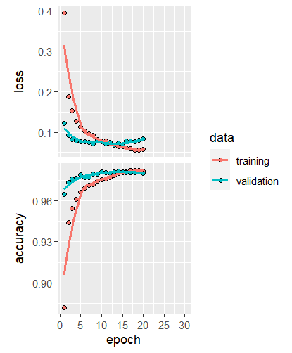
Das sieht nun viel besser aus. Auf der Höhe von Epoche 15 sind die beiden Loss Kurven und die beiden Accuracy Kurven nun sehr nahe beieinander. Wir machen kein Overfitting und sind nun zufrieden mit diesem Modell.
Nachdem wir das Modell trainiert haben, können wir uns die optimalen Gewichte anschauen, indem wir sie mit get_weights() aus dem Modellobjekt ann2 extrahieren. Das Objekt trained_weights ist eine Liste mit 6 Elementen. Überlegt euch kurz, ob die Dimensionen der 6 Elemente in der Liste Sinn machen.
# Optimale Gewichte anschauen
trained_weights <- ann2 %>%
get_weights()Mit evaluate() können wir das Modell auf dem Testset evaluieren.
# Evaluation Testset Performance
ann2 %>%
evaluate(X_test, y_test, verbose = 0) loss accuracy
0.08615529 0.97810000Wir kriegen sowohl den Wert der Kostenfunktion (auf dem Testset) als auch die Accuracy. Ihr seht, dass wir aktuell knapp 98% aller Bilder korrekt klassifizieren!
Wir können nun die Vorhersagen für alle Beobachtungen im Testset rechnen (mit predict()).
# Vorhersagen auf Testset
pred_test <- ann2 %>%
predict(X_test)
# Erste Zeile
head(pred_test, 1) [,1] [,2] [,3] [,4] [,5] [,6] [,7] [,8] [,9] [,10]
[1,] 6.685255e-13 5.311204e-10 8.525921e-08 5.529179e-09 5.470584e-12 1.843249e-10 1.825414e-17 0.9999895 3.462339e-11 1.033705e-05Das Modell gibt uns für jede Beobachtung (hier die erste) 10 Wahrscheinlichkeiten (Spalten) zurück, eine für jede mögliche Zahl 0 - 9. Dabei muss beachtet werden, dass die Wahrscheinlichkeiten in der ersten Spalte (mit [,1] bezeichnet) den Wahrscheinlichkeiten für die Zahl 0 entsprechen, etc.
Wir können aus diesen 10 Wahrscheinlichkeiten die harten Vorhersagen mit apply() ableiten. Wir rechnen am Schluss - 1, da wie bereits erwähnt der Index 1 der Zahl 0 entspricht, der Index 2 der Zahl 1, usw.
# Harte Vorhersagen auf Testset
.pred_class <- apply(pred_test, 1, which.max) - 1
# Wahre Werte Testset
truth <- apply(y_test, 1, which.max) - 1Nun haben wir die Zutaten, um eine Konfusionsmatrix zu rechnen. Hier bietet es sich an, die Zellen der Matrix mit ggplot2 visuell darzustellen:
# Konfusionsmatrix
bind_cols(.pred_class = .pred_class, truth = truth) %>%
mutate_all(factor, levels = 0:9, labels = 0:9) %>%
group_by(.pred_class, truth) %>%
count() %>%
ggplot(aes(x = truth, y = .pred_class, fill = n)) +
geom_tile() +
theme_bw() +
coord_equal() +
scale_fill_distiller(palette = "Greens", direction = 1) +
guides(fill = "none") +
geom_text(aes(label = n)) +
theme(panel.grid.major = element_blank(), panel.grid.minor = element_blank())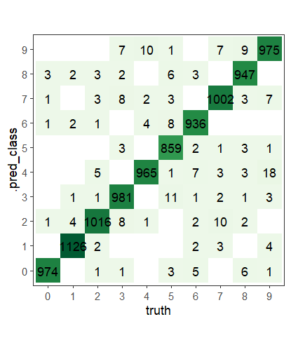
Es kann sein, dass die Zahlen, die ihr kriegt für die Konfusionsmatrix von denjenigen in obiger Abbildung abweichen. Der Grund hierfür ist, dass ein Modell durch die zufällige Initialisierung der Gewichte jedes Mal etwas anders trainiert wird und dementsprechend auch leicht andere Vorhersagen (und Fehler) macht. In oben abgebildeter Konfusionsmatrix machen wir zum Beispiel 18 Mal den Fehler, eine 9 als eine 4 vorherzusagen. Mit unten stehendem Code können wir uns die Bilder, welche eine 9 darstellen aber als 4 klassifiziert wurden, anschauen. Abgebildet ist nur ein Beispielsbild.
# Definiere Grauabstufungen
grays <- rgb(red = (0:255)/255, blue = (0:255)/255, green = (0:255)/255)
# Falsche Bilder anschauen
for (x in which(truth == 9 & .pred_class == 4)) {
# Wir indexen das falsche Bild
im <- X_test[x, ]
# Transformation in eine Matrix
dim(im) <- c(28, 28)
# Bild anzeigen
heatmap(im, Rowv = NA, Colv = NA, revC = T, col = grays, scale = "none")
}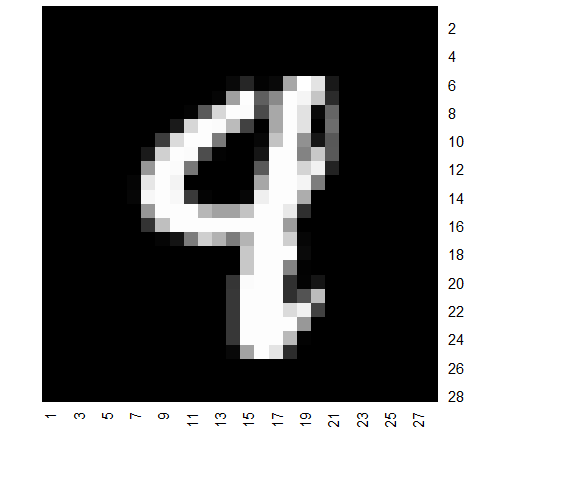
Es ist hier tatsächlich auch von Auge schwierig zu entscheiden, ob es sich um eine 9 oder eine 4 handelt.
Am Schluss können wir unser Modell im HDF5 Dateiformat abspeichern. Dieses Format erlaubt es Webapplikationen, das Modell zu laden und für Vorhersagen zu verwenden. Gespeichert wird die Architektur des Modells, alle Hyperparameter und selbstverständlich die optimalen Parameterwerte (Gewichte).
# Modell speichern
save_model_hdf5(ann, 'my_model.h5')
# Clean-up Environment
rm(list = ls())
# Modell wieder laden
ann <- load_model_hdf5('my_model.h5')Oder alternativ: das Skalarprodukt zwischen den Input-Variablenwerten und dem Gewichtsvektor.↩︎